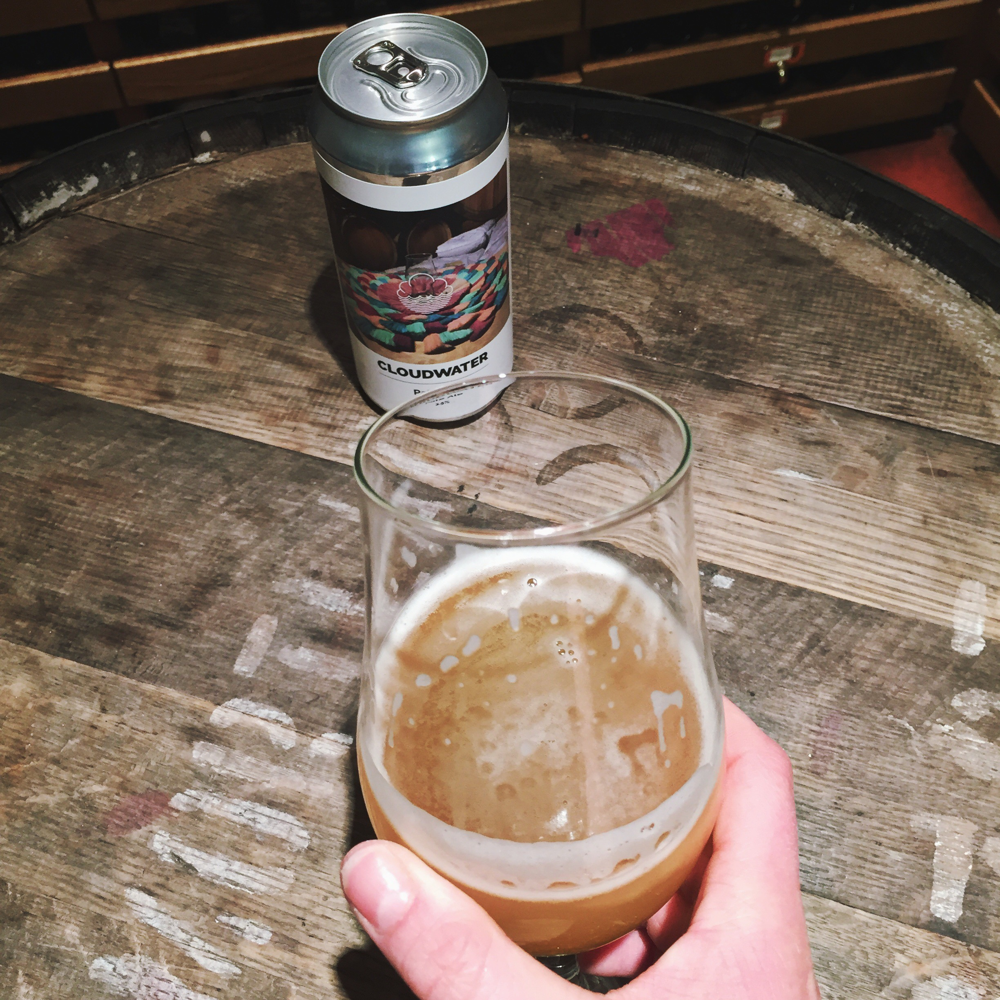
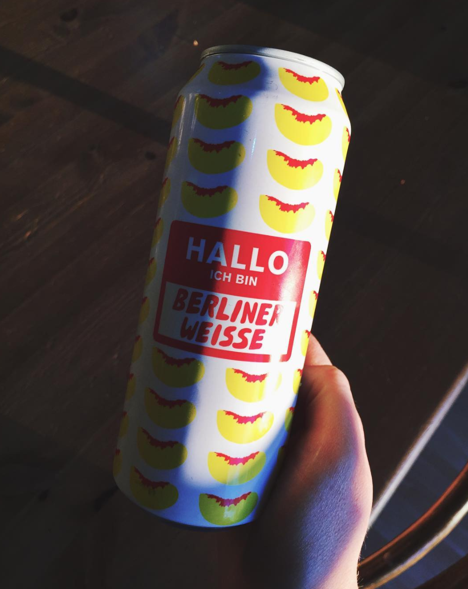
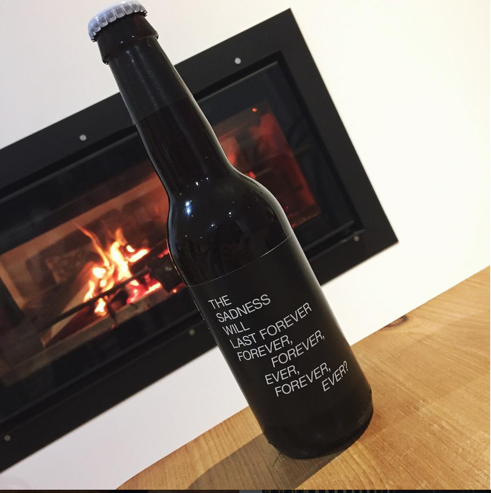

The newest pale ale from Manchester's finest sees some added Galaxy hops and oats for an unusual
texture and body in a pale, while a low ABV keeps things sessionable as well as flavourful.
Mikkeller - Hallo Ich Bin Berliner Weisse: Peach
Posted by: Rachel

This awesome sour is rhe perfect summer weather beer! It comes in a range of flavours
- raspberry, cherry and passion fruit - but our fave's peach!
To Øl - Don't Gose Towards the Light
Posted by: Rachel

Despite the label, this IPA's anything but dreary!
Packed full of blackcurrant flavour, To Øl are on top form as usual.
Cloudwater // BrewDog : New England IPA
Posted by: Rachel
A fantastic collaboration. I wish I could've bought a case,
this New England IPA's like drinking orange juice!
Omnipollo // BrewDog : FlatPack FruitBat
Posted by: Rachel
Omnipollo // BrewDog : FlatPack Fruitbat. Highlighting the dedication of those in town to try
new things, a case of this was ordered up from London and distributed amongst various St Andrean beer geeks.
A very fun, fruity IPA. THese guys should get together more often.
Evil Twin: Low Life Pilsner
Posted by: Rachel
Evil Twin: Low Life Pilsner.
First tried at Evil Twin's founder, Jeppe Jarnit-Bjergsø's Greenpoint Bar, TØrst -
an awesome Danish hideaway in the heart of Williamsburg - this pilsner can be
picked up in town at St Andrew's Wine Company, for around a fiver a can. Crisp and
refreshing, it's an excellent, if a little pricey intro
to craft beer for lager-lovers.